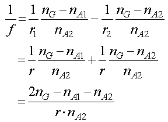
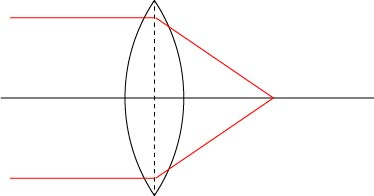
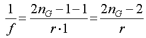
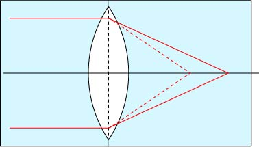
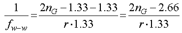
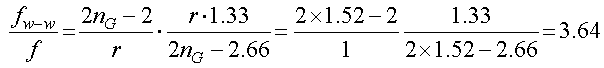
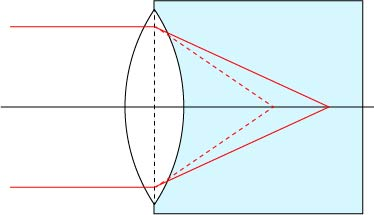
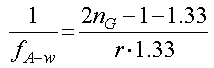
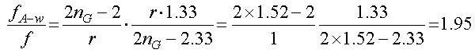

ここでは簡単に，左右のガラス面の曲率が等しいとします．（r = ｒ1＝ -ｒ2），すると，

のように簡単にすることができます．
焦点距離そのものは，レンズの曲率半径に依存してしまいますので，ここでは，
空気中のレンズの焦点距離，ｆ，との比
を求めることにしましょう．
空気中のレンズの場合は，（nA1=nA2=1）．


となります．
レンズの両側が水だったら，（nA1=nA2=1.33）．


その比は，

3.64倍焦点距離が伸びることとなります．
集光する側のみ水であったなら，（nA1=1, nA2=1.33）


その比は，

1.95倍焦点距離が伸びることとなります．
では，今までは平行光を入射した際の光追跡でしたが．．．平行でない光の場合はどうなるのでしょう？
次ページから考えていきましょう．